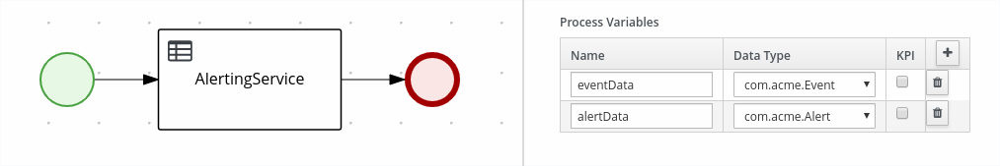
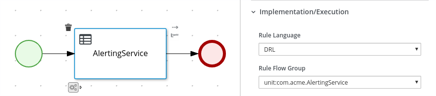

Kogito, ergo Rules: From Knowledge To Service, Effortless
Welcome to another episode of this blog series on the Kogito initiative and our efforts to bring Drools to the cloud. The goal of these posts is to gather early user feedback on the features we are delivering to Kogito.
In this post we present two new ways to realize a complete intelligent service:
- self-contained rule services
- integrated intelligent workflows with rule tasks
Units of Execution in Kogito
As you may already know, in Kogito we are making front-and-center the new Unit concept.
“Unit of execution” is the term that we use to indicate an executable piece of knowledge. A unit may be a process, a set of rules, a decision, etc… In the case of a set of rules, we call it a rule unit. If you opt-in to use units, in Kogito we will take care of all the boilerplate that is required to generate a REST endpoint automatically.
A rule unit is constituted primarily by
1) a data definition;
2) the set of rules and queries that implement the behavior of the unit (the rules of the rule engine);
3) optionally, event listeners may be attached for a number of purposes.
2) the set of rules and queries that implement the behavior of the unit (the rules of the rule engine);
3) optionally, event listeners may be attached for a number of purposes.
In this post we’ll focus on data definitions, rules and queries.
Data definitions are given by declaring a Java class that may contain data sources. Each data source represents a partition of the working memory that your rules will pattern match against or insert to.
For instance, suppose you want to declare an alerting service that receives events and produces alerts depending on some conditions. We declare
Event and Alert objects as follows:package com.acme;
public class Event {
String type;
int value;
// getters and setters
}
public class Alert {
String severity;
String message;
// getters and setters
}
The
AlertingService unit type declaration is a class that implements the interface RuleUnitData.package com.acme;
public class AlertingService implements RuleUnitData {
private final DataStream<Event> eventData = DataSource.createStream();
private final DataStream<Alert> alertData = DataSource.createStream();
// getters and setters
}
Rules are defined in DRL files as usual, except that you have now to indicate their unit at the top of the file. For instance you may declare the data definition for
AlertingService as follows:package com.acme;
unit AlertingService;
rule IncomingEvent when
// matches when a temperature higher than 30 °C is registered (OOPath syntax)
$e : /eventData [ type == "temperature", value >= 30 ]
then
System.out.println("incoming event: "+ $e.getMessage());
alertData.append( new Alert( "warning", "Temperature is too high" ) );
end
As you can see, rules may match against or insert to the given data sources.
Queries are defined in DRL files like rules, and belong to a unit, too. If you declare at least one query, you will get a REST endpoint automatically generated for free. For instance:
query Warnings
alerts: /alertData [ severity == "warning" ]
end
will generate the REST endpoint
/warnings that you will be able to invoke by POST-ing to it as follows: $ curl -X POST
-H 'Accept: application/json'
-H 'Content-Type: application/json'
-d '{ "eventData": [ { "type": "temperature", "value" : 40 } ] }'
http://localhost:8080/warnings
This will generate the response:
[ { "severity": "warning", "message" : "Temperature is too high" } ]
The Java-based data definition is very familiar to programmers, but, from early user feedback, we decided to provide two alternative methods to declare a rule unit. We are publishing this blog post to gather more user feedback!
Type Declaration
The type declaration is the DRL feature to declare Java-compatible types, in a Java-agnostic way. In the 7 series, users may declare types with the syntax:
package com.acme;
declare Event
type: String
value: int
end
declare Alert
severity: String
message: String
end
This makes the DRL completely self-contained: entities and rules may be all defined using DRL. However, they have few limitations; for instance, they do not support implementing interfaces and they do not support generic type fields. In other words, the following declaration, in the 7 series, is syntactically invalid:
package com.acme;
declare AlertingService extends RuleUnitData
eventData: DataStream<Event>
alertData: DataStream<Alert>
end
In version 0.8.0, we are lifting these limitations: we allow limited inheritance for interfaces (only one is allowed for now) and generic type declaration for fields. With these new features, the following piece of code becomes valid DRL.
Long story short: you are now able to declare a full microservice
from a single DRL.
from a single DRL.
Bootstrap your Kogito service with the archetype:
mvn archetype:generate
-DarchetypeGroupId=org.kie.kogito
-DarchetypeArtifactId=kogito-quarkus-archetype
-DarchetypeVersion=0.8.0
-DgroupId=com.acme
-DartifactId=sample-kogito
At the moment, no Quarkus version bundles Kogito 0.8.0; otherwise, you would be able to use
mvn io.quarkus:quarkus-maven-plugin:create instead.Now, clear the contents of
src/main and then, drop this DRL to src/main/resources/com/acme folder instead:package com.acme;
unit AlertingService;
import org.kie.kogito.rules.DataStream;
import org.kie.kogito.rules.RuleUnitData;
declare Event
type: String
value: int
end
declare Alert
severity: String
message: String
end
declare AlertingService extends RuleUnitData
eventData: DataStream<Event>
alertData: DataStream<Alert>
end
rule IncomingEvent when
// matches when a temperature higher than 30 °C is registered (OOPath syntax)
$e : /eventData [ type == "temperature", value >= 30 ]
then
System.out.println("incoming event: "+ $e.getMessage());
alertData.append( new Alert( "warning", "Temperature is too high: " + $e ) );
end
query Warnings
alerts: /alertData [ severity == "warning" ]
end
Now fire up the Quarkus service in developer mode with:
$ mvn compile quarkus:dev
There you go, you are now ready to
curl your service: $ curl -X POST
-H 'Accept: application/json'
-H 'Content-Type: application/json'
-d '{ "eventData": [ { "type": "temperature", "value" : 40 } ] }'
http://localhost:8080/warnings
Workflow Integration
Another way to expose a rule-based service is through a workflow.
A workflow (sometimes called a “business process”) describes a sequence of steps in a diagram and it usually declares variables: data holders for values that are manipulated in the execution. The data type of one such variable may be anything: you may use Java classes, but, in this example, we will use again our declared data types.
package com.acme;
declare Event
type: String
value: int
end
declare Alert
severity: String
message: String
end
Let us call this workflow
com.acme.AlertingWorkflow, and declare the variables eventData and alertData:
A workflow that includes a rule task may skip the rule unit data declaration altogether: in this case the rule unit is inferred directly from the structure of the process: each variable will be inserted into data source of the same name.

The name of the unit is declared by the process, using the syntax
unit:com.acme.AlertingService. You are still free to explicitly declare the unit com.acme.AlertingService; in that case, the process will pick up the declaration that you have hand-coded.Note: You may have noticed that we are using the “Rule Flow Group” field. We will implement more explicit support in the UI in the future.
Bootstrap your Kogito service with the archetype:
mvn archetype:generate
-DarchetypeGroupId=org.kie.kogito
-DarchetypeArtifactId=kogito-quarkus-archetype
-DarchetypeVersion=0.8.0
-DgroupId=com.acme
-DartifactId=sample-kogito
Caveat. Support for this feature is experimental, so it may not work seamlessly with Quarkus hot code reload; we also need the following extra step to enable it, but this will change in the future.
Update your
pom.xml with the following plugin declaration: <build>
<plugins>
<plugin>
<groupId>org.kie.kogito</groupId>
<artifactId>kogito-maven-plugin</artifactId>
<version>0.8.0</version>
<executions>
<execution>
<goals>
<goal>generateDeclaredTypes</goal>
</goals>
</execution>
</executions>
</plugin>
...
</plugins>
</build>
You can now clear the contents of
src/main, and then drop the process and the following DRL to src/main/resources/com/acme folder.package com.acme;
unit AlertingService;
import org.kie.kogito.rules.DataStream;
import org.kie.kogito.rules.RuleUnitData;
declare Event
type: String
value: int
end
declare Alert
severity: String
message: String
end
rule IncomingEvent when
// matches when a temperature higher than 30 °C is registered (OOPath syntax)
$e : /eventData [ type == "temperature", value >= 30 ]
then
System.out.println("incoming event: "+ $e.getMessage());
alertData.set( new Alert( "warning", "Temperature is too high: " + $e ) );
end
As you may have noticed, you are not required to declare a query explicitly: the process will display the contents of the variables as a response; it will generate the endpoint
/AlertingWorkflow, and it accept a POST request of the following form: $ curl -X POST
-H 'Accept: application/json'
-H 'Content-Type: application/json'
-d '{ "eventData": { "type": "temperature", "value" : 40 } }'
http://localhost:8080/AlertingWorkflow
The reply will be:
{
"id": ...,
"eventData": {
"type": "temperature",
"value": 100
},
"alertData": {
"severity": "warning",
"message": "Temperature is too high: Event( type=temperature, value=100 )"
}
}
However, if you do declare a query, a separate endpoint will be available as well. For instance if you declare the query
Warnings you will still be able to POST to http://localhost:8080/warnings and invoke the rule service separately as follows:$ curl -X POST
-H 'Accept: application/json'
-H 'Content-Type: application/json'
-d '{ "eventData": { "type": "temperature", "value" : 40 } }'
http://localhost:8080/warnings
Notice that the request no longer contains a list of Events. This is because process variables are mapped to single values instead of DataStreams.
Conclusion
We have given a sneak peek on the work that we are doing to improve the getting started experience with rules and processes in Kogito. With these changes, we hope to have provided a more streamlined way to define knowledge-based services. Developers will always able to be more explicit about the data they want to process, by opting-in to writing Java; but if they want, they can embrace a fully DSL-centric development workflow.
For the lazies, examples are available at https://github.com/evacchi/kogito-rules-example/tree/master/code Have fun!
Author
After my PhD at University of Milan on programming language design and implementation, I worked for three years at UniCredit Bank's R&D department. Later, I have joined Red Hat where I work on the Drools rule engine, the jBPM workflow engine and the Kogito cloud-native business automation platform. I sometimes write articles at the KIE organization and on on my own personal blog.
View all posts